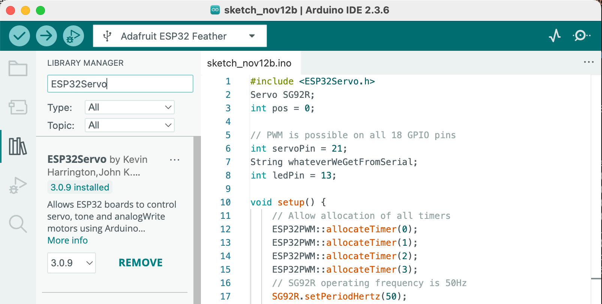
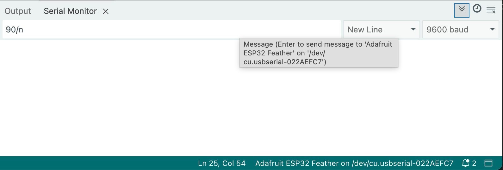

Follow the Adafruit ESP32 Feather guide for more information.
int period = 4000; //number in milliseconds
int currRemainder = 0;
int prevRemainder = 0;
void setup() {
// put your setup code here, to run once:
}
void loop() {
// put your main code here, to run repeatedly:
currRemainder = millis() % period;
if(currRemainder < prevRemainder) {
// do the thing!
}
prevRemainder = currRemainder;
}
Simple example to test the functionality of the SG92R servo motor. The expected behavior is that the servo arm will sweep back and forth between 0 and 180 degrees. The code requires the ESP32Servo library. The best way to installis it is through Arduino IDE:

Basics of PWM (Pulse Width Modulation)
The ESP32 PWM controller is primarily designed to control the intensity of LEDs, although it can be used to generate PWM signals for other purposes as well. It has 16 channels that can generate independent PWM waveforms. The ESP32 PWM controller has 8 high-speed channels and 8 low-speed channels, which gives us a total of 16 channels. They're divided into two groups depending on the speed. For each group, there are 4 timers / 8 channels. This means every two channels share the same timer. Therefore, we can't independently control the PWM frequency of each couple of channels. See this guide for more detail.
#include <ESP32Servo.h>
Servo SG92R;
int pos = 0;
// PWM is possible on all 18 GPIO pins
int servoPin = 21;
void setup() {
// Allow allocation of all 4 timers
ESP32PWM::allocateTimer(0);
ESP32PWM::allocateTimer(1);
ESP32PWM::allocateTimer(2);
ESP32PWM::allocateTimer(3);
// SG92R operating frequency is 50Hz
SG92R.setPeriodHertz(50);
// min and max pulse width settings for SG92R are 500 to 2500 microseconds
SG92R.attach(servoPin, 500, 2500);
Serial.begin(9600);
}
void loop() {
for (pos = 0; pos <= 180; pos += 1) { // goes from 0 degrees to 180 degrees
// in steps of 1 degree
SG92R.write(pos); // tell servo to go to position in variable 'pos'
Serial.println(pos);
delay(10); // waits 10ms for the servo to reach the position
}
for (pos = 180; pos >= 0; pos -= 1) { // goes from 180 degrees to 0 degrees
SG92R.write(pos); // tell servo to go to position in variable 'pos'
Serial.println(pos);
delay(10); // waits 10ms for the servo to reach the position
}
}
The following code uses the values from a serial connection to set the position of the servo motor. Notice that each transmission terminates with a newline character.
#include
Servo SG92R;
int pos = 0;
String whateverWeGetFromSerial = "";
// PWM is possible on all 18 GPIO pins
int servoPin = 21;
void setup() {
// Allow allocation of all timers
ESP32PWM::allocateTimer(0);
ESP32PWM::allocateTimer(1);
ESP32PWM::allocateTimer(2);
ESP32PWM::allocateTimer(3);
// SG92R operating frequency is 50Hz
SG92R.setPeriodHertz(50);
// min and max pusle width settings for SG92R are 500 to 2500 microseconds
SG92R.attach(servoPin, 500, 2500);
Serial.begin(9600);
}
void loop() {
if(Serial.available()){
whateverWeGetFromProcessing = Serial.readStringUntil('\n')
// convert the read value to an integer and write to servo
myServo.write(whateverWeGetFromProcessing.toInt());
delay(15);
}
}
Open the Serial Monitor in Arduino IDE and set the value. Remember to add the newline character represented as '\n'.

The servo position could then be controlled by a simple Processing code:
import processing.serial.*;
float angle = HALF_PI;
Serial myConnection;
void setup(){
size(400, 400);
printArray(Serial.list());
myConnection = new Serial(this, Serial.list()[3], 9600);
}
void draw(){
background(255);
noFill();
strokeWeight(5);
stroke(0);
arc(width/2, height*0.75, width/2, height/2, PI, TWO_PI);
pushMatrix();
translate(width/2, height*0.75);
rotate(-angle);
strokeWeight(2);
line(0, 0, 0, width/4);
fill(255, 0, 0);
noStroke();
rect(-5, width/4 - 15, 10, 30);
popMatrix();
}
void mouseDragged(){
if(mouseX > 0 && mouseX < width){
angle = map(mouseX, 0, width, PI*1.5, HALF_PI);
int sending = int(degrees(angle)) - 90;
myConnection.write(sending +'\n');
}
}